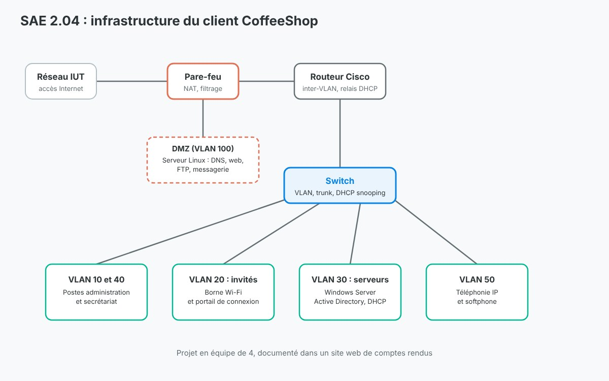

Dans le cadre de la SAE 2.04 de 1re année, nous avons réalisé en équipe de 4 un projet intégratif qui regroupe tout ce que nous avions vu dans l'année en réseaux, en programmation et en PPP.
Nous jouions le rôle d'une entreprise de services informatique chargée de mettre en place l'infrastructure d'un client fictif, un café baptisé CoffeeShop : réseau pour les employés, Wi-Fi pour les clients, serveurs et téléphonie.
Objectif :
Concevoir et mettre en service une infrastructure réseau complète et sécurisée, puis la documenter.

Infrastructure mise en place pour le client CoffeeShop
Travaux :
Réseau :
Segmentation en VLAN : administration (10), invités (20), serveurs (30), secrétariat (40), téléphonie (50) et DMZ (100)
Switch : ports en mode access par VLAN, lien trunk vers le routeur
Routeur Cisco : sous-interfaces pour le routage inter-VLAN, NAT, ACL, relais DHCP (ip helper-address) et accès SSH
Pare-feu : NAT et règles de filtrage vers le réseau de l'IUT
Borne Wi-Fi D-Link dans le VLAN invités, avec une page web de connexion avant l'accès à Internet
Serveurs et services :
Installation des postes clients Windows 10 et Debian
Windows Server : Active Directory, groupes et utilisateurs, service DHCP
Serveur Linux : DNS avec BIND9, site web avec XAMPP, transfert de fichiers avec vsftpd, messagerie avec Postfix et Dovecot
Sécurité :
Protection contre l'usurpation DHCP avec le DHCP snooping sur le switch, testée en branchant un poste sur un port non autorisé
Script PowerShell qui analyse les journaux DHCP pour détecter une attaque par épuisement d'adresses (DHCP starvation)
Résultat :
L'infrastructure a été documentée dans un site web développé en HTML, CSS et PHP : la vitrine du café, avec un formulaire de contact, et une partie « Infrastructure » qui regroupe une vingtaine de fiches de compte rendu, une par élément configuré.